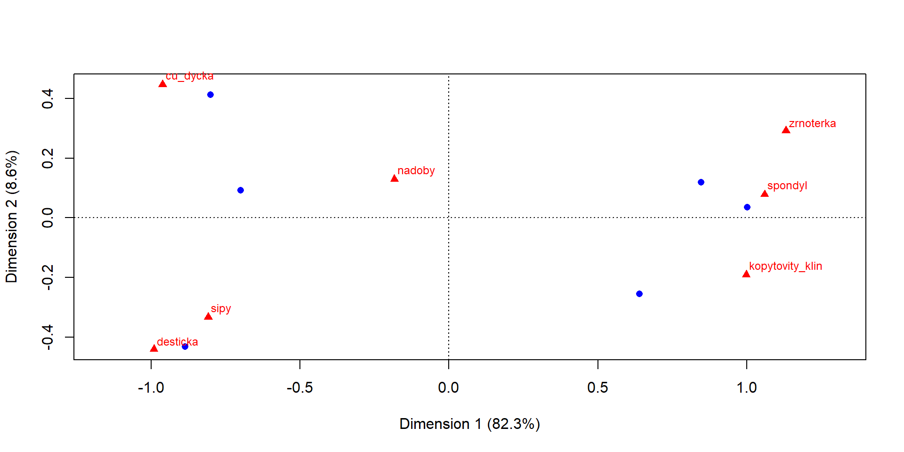
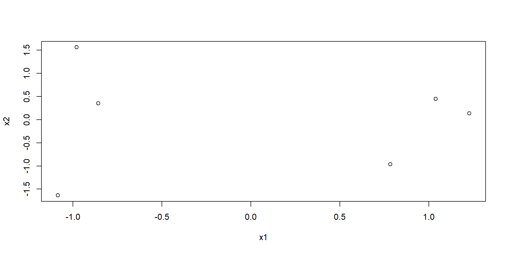
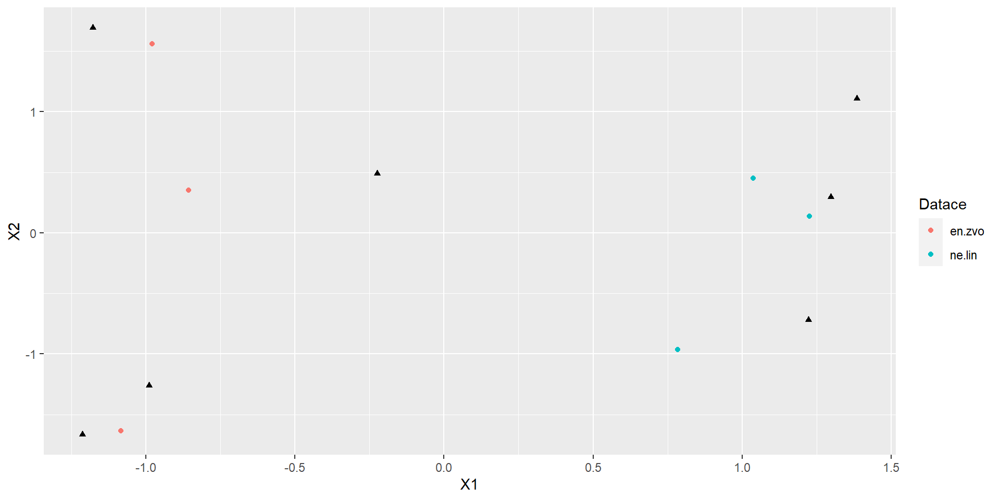
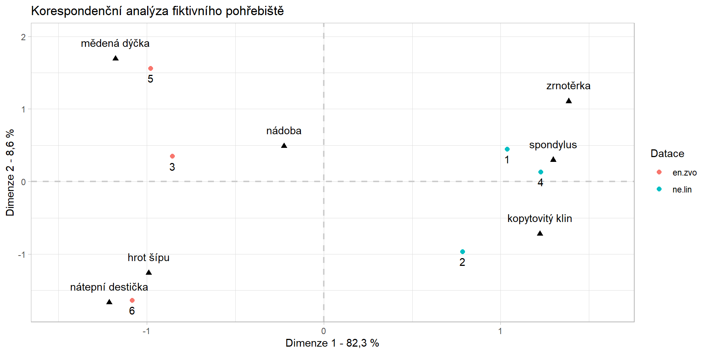

cisla <- c(1:10)
cisla [1] 1 2 3 4 5 6 7 8 9 10cisla <- c(1:10)
cisla [1] 1 2 3 4 5 6 7 8 9 10stovky <- c(101:110)
stovky [1] 101 102 103 104 105 106 107 108 109 110pismena <- c("a", "b", "c", "d", "e", "f", "g", "h", "i", "j")
pismena [1] "a" "b" "c" "d" "e" "f" "g" "h" "i" "j"you can combine different vectors into matrixes or dataframes
rbind() combine vectors into Rows, cbind() into Columns
the vectors have to be of the same length!
cbind
sloupce <- cbind(cisla, stovky, pismena)
head(sloupce, 5) cisla stovky pismena
[1,] "1" "101" "a"
[2,] "2" "102" "b"
[3,] "3" "103" "c"
[4,] "4" "104" "d"
[5,] "5" "105" "e" rbindradky <- rbind(cisla, stovky, pismena)
radky [,1] [,2] [,3] [,4] [,5] [,6] [,7] [,8] [,9] [,10]
cisla "1" "2" "3" "4" "5" "6" "7" "8" "9" "10"
stovky "101" "102" "103" "104" "105" "106" "107" "108" "109" "110"
pismena "a" "b" "c" "d" "e" "f" "g" "h" "i" "j" You can then very simply create a dataframe:
tabulka <- data.frame(sloupce)But you have to check whether the numbers are really numbers
str(tabulka)'data.frame': 10 obs. of 3 variables:
$ cisla : chr "1" "2" "3" "4" ...
$ stovky : chr "101" "102" "103" "104" ...
$ pismena: chr "a" "b" "c" "d" ...Whoa! The numbers are not numbers but characters. You will have to fix it by as.numeric() if you want to do mathematical operations. It is also a good practice to always check the structure of your dataframe before carrying out any operations.
tabulka$cisla <- as.numeric(tabulka$cisla)
tabulka$stovky <- as.numeric(tabulka$stovky)
str(tabulka)'data.frame': 10 obs. of 3 variables:
$ cisla : num 1 2 3 4 5 6 7 8 9 10
$ stovky : num 101 102 103 104 105 106 107 108 109 110
$ pismena: chr "a" "b" "c" "d" ... cisla stovky pismena
1 1 101 a
2 2 102 b
3 3 103 c
4 4 104 dwith square brackets [] you can easily select specific columns, rows or cells
your_dataframe[row number, column number]
1st row:
tabulka[1,] cisla stovky pismena
1 1 101 atabulka[,1] [1] 1 2 3 4 5 6 7 8 9 10tabulka[1,2][1] 101Now you can make some mathematical operations by selecting specific cells with square brackets:
tabulka[1,2] + tabulka[2,2][1] 203You can even create a new column with the results:
tabulka$novy_sloupec <-tabulka[,1] + 10
head(tabulka, 4) cisla stovky pismena novy_sloupec
1 1 101 a 11
2 2 102 b 12
3 3 103 c 13
4 4 104 d 14mutate() function from dplyr packagelibrary(dplyr)
tabulka<-mutate(tabulka, este_jeden_sloupec = tabulka[,1] + 100)
head(tabulka,4) cisla stovky pismena novy_sloupec este_jeden_sloupec
1 1 101 a 11 101
2 2 102 b 12 102
3 3 103 c 13 103
4 4 104 d 14 104rowSums()tabulka_1 <- tabulka
tabulka_1$sucet <- rowSums(tabulka_1[,1:2])
head(tabulka_1, 4) cisla stovky pismena novy_sloupec este_jeden_sloupec sucet
1 1 101 a 11 101 102
2 2 102 b 12 102 104
3 3 103 c 13 103 106
4 4 104 d 14 104 108dplyr:tabulka <- tabulka %>%
mutate(sucet = cisla + stovky)
head(tabulka,4) cisla stovky pismena novy_sloupec este_jeden_sloupec sucet
1 1 101 a 11 101 102
2 2 102 b 12 102 104
3 3 103 c 13 103 106
4 4 104 d 14 104 108colnames()nazvy_sloupcu <- colnames(tabulka)
nazvy_sloupcu[1] "cisla" "stovky" "pismena"
[4] "novy_sloupec" "este_jeden_sloupec" "sucet" Let’s have a look on table radky, the colnames look bit strange
data.frame(radky) X1 X2 X3 X4 X5 X6 X7 X8 X9 X10
cisla 1 2 3 4 5 6 7 8 9 10
stovky 101 102 103 104 105 106 107 108 109 110
pismena a b c d e f g h i jLet’s say we will name the columns after the values in pismena row
colnames(radky)<- radky[3,]
head(radky, 4) a b c d e f g h i j
cisla "1" "2" "3" "4" "5" "6" "7" "8" "9" "10"
stovky "101" "102" "103" "104" "105" "106" "107" "108" "109" "110"
pismena "a" "b" "c" "d" "e" "f" "g" "h" "i" "j" You can also remove row used for column names:
radky <- radky[-3,]
radky<-data.frame(radky)
radky a b c d e f g h i j
cisla 1 2 3 4 5 6 7 8 9 10
stovky 101 102 103 104 105 106 107 108 109 110datace <- c("ne.lin", "ne.lin", "en.zvo", "ne.lin", "en.zvo", "en.zvo")
nadoby <- c(4, 3, 7, 2, 4, 3)
sipy <- c(0,1,3,0, 2, 4)
cu_dycka <- c(0,0,3,0, 4,2)
spondyl <- c(5,2,0,4, 0, 0)
kopytovity_klin <- c(4,5,0,4, 0, 0)
desticka <- c(0,0,2,0,1, 3)
zrnoterka <- c(1, 0, 0, 1, 0, 0)
pohrebiste <- data.frame(datace, nadoby, sipy, cu_dycka, spondyl, kopytovity_klin, desticka, zrnoterka)pohrebiste datace nadoby sipy cu_dycka spondyl kopytovity_klin desticka zrnoterka
1 ne.lin 4 0 0 5 4 0 1
2 ne.lin 3 1 0 2 5 0 0
3 en.zvo 7 3 3 0 0 2 0
4 ne.lin 2 0 0 4 4 0 1
5 en.zvo 4 2 4 0 0 1 0
6 en.zvo 3 4 2 0 0 3 0pohrebiste_2 <- pohrebiste
pohrebiste_2$pocet_artefaktu <- rowSums(pohrebiste[, 2:8])
pohrebiste_2$ID <- c(1:6)
pohrebiste_2 datace nadoby sipy cu_dycka spondyl kopytovity_klin desticka zrnoterka
1 ne.lin 4 0 0 5 4 0 1
2 ne.lin 3 1 0 2 5 0 0
3 en.zvo 7 3 3 0 0 2 0
4 ne.lin 2 0 0 4 4 0 1
5 en.zvo 4 2 4 0 0 1 0
6 en.zvo 3 4 2 0 0 3 0
pocet_artefaktu ID
1 14 1
2 11 2
3 15 3
4 11 4
5 11 5
6 12 6dplyr:pohrebiste <- pohrebiste %>%
mutate(pocet_artefaktu= rowSums(pohrebiste[,2:8]),
ID = c(1:6))
head(pohrebiste, 3) datace nadoby sipy cu_dycka spondyl kopytovity_klin desticka zrnoterka
1 ne.lin 4 0 0 5 4 0 1
2 ne.lin 3 1 0 2 5 0 0
3 en.zvo 7 3 3 0 0 2 0
pocet_artefaktu ID
1 14 1
2 11 2
3 15 3| male | female | |
|---|---|---|
| left side | 10 | 1 |
| right side | 2 | 12 |
ca datace nadoby sipy cu_dycka spondyl kopytovity_klin desticka zrnoterka
1 ne.lin 4 0 0 5 4 0 1
2 ne.lin 3 1 0 2 5 0 0
3 en.zvo 7 3 3 0 0 2 0
4 ne.lin 2 0 0 4 4 0 1
5 en.zvo 4 2 4 0 0 1 0
6 en.zvo 3 4 2 0 0 3 0library(ca)
ca_vysledek <- ca(pohrebiste[,2:8])
plot(ca_vysledek)
ca_vysledek
Principal inertias (eigenvalues):
1 2 3 4 5
Value 0.667126 0.069873 0.054181 0.018769 0.001128
Percentage 82.25% 8.61% 6.68% 2.31% 0.14%
Rows:
[,1] [,2] [,3] [,4] [,5] [,6]
Mass 0.189189 0.148649 0.202703 0.148649 0.148649 0.162162
ChiDist 0.879868 0.836034 0.738122 1.026842 0.926948 1.011206
Inertia 0.146464 0.103898 0.110437 0.156736 0.127724 0.165817
Dim. 1 1.037358 0.783658 -0.856640 1.225783 -0.979198 -1.083841
Dim. 2 0.450424 -0.963242 0.350276 0.134612 1.561622 -1.635249
Columns:
nadoby sipy cu_dycka spondyl kopytovity_klin desticka
Mass 0.310811 0.135135 0.121622 0.148649 0.175676 0.081081
ChiDist 0.300899 0.875803 1.086977 1.097286 1.064182 1.129904
Inertia 0.028141 0.103653 0.143698 0.178978 0.198950 0.103515
Dim. 1 -0.224254 -0.989256 -1.177308 1.297475 1.221578 -1.212896
Dim. 2 0.489148 -1.259831 1.692644 0.297174 -0.720551 -1.666812
zrnoterka
Mass 0.027027
ChiDist 1.415361
Inertia 0.054142
Dim. 1 1.385408
Dim. 2 1.106622str(ca_vysledek)List of 16
$ sv : num [1:5] 0.8168 0.2643 0.2328 0.137 0.0336
$ nd : logi NA
$ rownames : NULL
$ rowmass : num [1:6] 0.189 0.149 0.203 0.149 0.149 ...
$ rowdist : num [1:6] 0.88 0.836 0.738 1.027 0.927 ...
$ rowinertia: num [1:6] 0.146 0.104 0.11 0.157 0.128 ...
$ rowcoord : num [1:6, 1:5] 1.037 0.784 -0.857 1.226 -0.979 ...
..- attr(*, "dimnames")=List of 2
.. ..$ : NULL
.. ..$ : chr [1:5] "Dim1" "Dim2" "Dim3" "Dim4" ...
$ rowsup : logi(0)
$ colnames : chr [1:7] "nadoby" "sipy" "cu_dycka" "spondyl" ...
$ colmass : num [1:7] 0.311 0.135 0.122 0.149 0.176 ...
$ coldist : num [1:7] 0.301 0.876 1.087 1.097 1.064 ...
$ colinertia: num [1:7] 0.0281 0.1037 0.1437 0.179 0.1989 ...
$ colcoord : num [1:7, 1:5] -0.224 -0.989 -1.177 1.297 1.222 ...
..- attr(*, "dimnames")=List of 2
.. ..$ : chr [1:7] "nadoby" "sipy" "cu_dycka" "spondyl" ...
.. ..$ : chr [1:5] "Dim1" "Dim2" "Dim3" "Dim4" ...
$ colsup : logi(0)
$ N : num [1:6, 1:7] 4 3 7 2 4 3 0 1 3 0 ...
$ call : language ca.matrix(obj = as.matrix(obj))
- attr(*, "class")= chr "ca"x1 <- ca_vysledek$rowcoord[,1]
x2 <- ca_vysledek$rowcoord[,2]
y1 <- ca_vysledek$colcoord[,1]
y2 <- ca_vysledek$colcoord[,2]x1 and x2 represent coordinates of row values (graves), y1 and y2 represent column values (artefacts)
quick check:
plot(x1,x2)
now we need to create dataframes with for both row values and column values
row values (graves):
datace <- data.frame(pohrebiste$datace)
id <- data.frame(pohrebiste$ID)
coord_datace <- data.frame(cbind(datace, x1,x2, id))
colnames(coord_datace) <- c("Datace", "X1", "X2", "ID")
head(coord_datace, 4) Datace X1 X2 ID
1 ne.lin 1.0373584 0.4504244 1
2 ne.lin 0.7836584 -0.9632417 2
3 en.zvo -0.8566397 0.3502757 3
4 ne.lin 1.2257826 0.1346118 4artefakty <- data.frame(colnames(pohrebiste[,2:8]))
coord_artefakty <- data.frame(cbind(y1, y2))
coord_artefakty$artefakty <- rownames(coord_artefakty)
colnames(coord_artefakty) <- c("Y1", "Y2","Artefakty")
rownames(coord_artefakty) <- c(1:7)
head(coord_artefakty, 4) Y1 Y2 Artefakty
1 -0.2242544 0.4891476 nadoby
2 -0.9892557 -1.2598313 sipy
3 -1.1773081 1.6926442 cu_dycka
4 1.2974752 0.2971739 spondylggplot()+
geom_point(data = coord_datace, aes(X1, X2, color = Datace))+
geom_point(data = coord_artefakty, aes(Y1, Y2), shape = 17)
geom_point() two times
geom_text()geom_text(...,aes(label=your_vector))labels_artefacts <- c("nádoba", "hrot šípu", "mědená dýčka", "spondylus", "kopytovitý klin", "nátepní destička", "zrnotěrka")ggplot()+
geom_vline(xintercept = 0, color="gray80", linewidth = 0.75, linetype = "dashed")+
geom_hline(yintercept = 0, color="gray80", linewidth = 0.75, linetype = "dashed")+
geom_point(data = coord_datace, aes(X1, X2, colour = Datace), size = 2)+
geom_point(data = coord_artefakty, aes(Y1, Y2), shape = 17, size = 2)+
geom_text(data = coord_artefakty, aes(label = labels_artefacts, x=Y1, y=Y2), vjust = -1.5)+
geom_text(data = coord_datace, aes(label = ID, x=X1, y=X2), vjust = 1.75)+
xlim(-1.5, 1.6)+
ylim(-1.75, 2)+
labs(x="Dimenze 1 - 82,3 %", y="Dimenze 2 - 8,6 %",
title = "Korespondenční analýza fiktivního pohřebiště")+
theme_light()